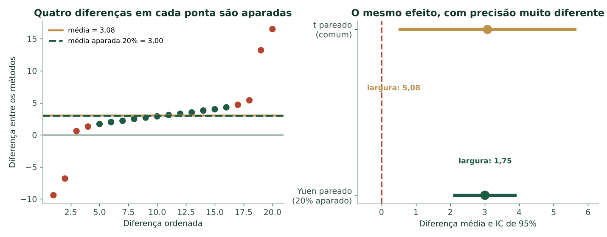

Teste de Yuen robusto pareado (Yuend)
Compara duas medidas pareadas pela média aparada das diferenças, reduzindo a influência de valores extremos.
Comece por aqui
O teste t pareado analisa a média das diferenças entre duas medidas feitas na mesma unidade. Se algumas dessas diferenças forem atípicas — uma leitura com falha, uma peça com defeito, um registro trocado —, a média e o desvio-padrão das diferenças ficam instáveis, e o intervalo de confiança se alarga sem necessidade. O teste de Yuen pareado aplica a aparagem às diferenças.
É o teste t de uma amostra aplicado às diferenças, trocando a média pela média aparada e a variância pela variância winsorizada.
O que é o teste
Calculam-se as diferenças \(d_i\) de cada par. Em seguida, descarta-se uma proporção \(\gamma\) das maiores e das menores diferenças, e compara-se a média aparada resultante com zero. O erro-padrão vem da variância winsorizada das diferenças, que permanece estável mesmo quando algumas delas são extremas.
A aparagem é feita sobre as diferenças \(d_i\). Aparar a condição 1 e a condição 2 separadamente descartaria unidades distintas em cada uma e desfaria o pareamento.
Pressupostos e como verificá-los
| Pressuposto | Por que importa | Como verificar |
|---|---|---|
| Pares definidos pelo delineamento | O pareamento não pode ser feito depois, olhando os dados. | Protocolo do estudo. |
| Pares independentes entre si | A dependência permitida é só dentro do par. | Delineamento. |
| Variável quantitativa contínua | A aparagem exige uma ordem métrica. | Natureza da variável. |
| Normalidade das diferenças | Não é exigida: é a razão de usar o método. | — |
| Pares suficientes após a aparagem | Com n = 20 e 20% de aparagem restam 12 diferenças. | n(1 − 2γ); com poucos pares, use bootstrap. |
| Assimetria não extrema | A média aparada ainda é afetada por assimetria muito forte. | Histograma das diferenças. |
Hipóteses e estatística de teste
Em que:
- \(d_i\)
- diferença entre as duas medidas do par i
- \(\bar d_t\)
- média aparada das diferenças
- \(s_{wd}^2\)
- variância winsorizada das diferenças
- \(\gamma\)
- proporção aparada em cada ponta
- \(g\)
- número de diferenças descartadas em cada ponta
- \(h\)
- diferenças que sobram; os graus de liberdade são \(h-1\)
Exemplo numérico, passo a passo
Dados do exemplo: \(n=20\), \(\gamma=0{,}2\), logo \(g=4\) e \(h=12\).
| Passo | Valor |
|---|---|
| Média das diferenças | 3,0750 |
| Média aparada 20% | 3,0000 |
| Variância comum das diferenças | 29,507 |
| Variância winsorizada | 1,0989 |
| Erro-padrão = √[19 × 1,0989 / (12 × 11)] | 0,3977 |
| t = 3,0000 / 0,3977 | 7,5430 |
| Graus de liberdade (h − 1) | 11 |
| Valor-p | 1,1 × 10⁻⁵ |
| IC 95% | [2,125; 3,875] |
Erro-padrão comum: \(5{,}4321/\sqrt{20}=1{,}2146\) ⇒ \(t=3{,}075/1{,}2146=2{,}5316\), com 19 g.l. e \(p=0{,}0203\).
IC de 95%: \([0{,}533;\ 5{,}617]\), com largura de 5,08.
O teste comum também detecta o efeito, mas com precisão muito menor: o intervalo de Yuen tem menos de um terço da largura. A diferença está na variância usada — 29,5 contra 1,1 —, resultado das quatro diferenças extremas (−9,4; −6,8; 13,2 e 16,5).
Propriedades
- Com \(\gamma=0\), o teste se reduz exatamente ao teste t pareado.
- Os graus de liberdade são \(h-1\), e não \(n-1\): a aparagem tem um custo, compensado pela queda no erro-padrão.
- A média aparada das diferenças coincide com a média quando a distribuição das diferenças é simétrica.
- O procedimento é equivalente a aplicar o intervalo de confiança aparado de uma amostra (
trimci) às diferenças. - Não é o mesmo que aparar cada condição separadamente e subtrair: isso quebraria o pareamento.
- Para poucos pares, a versão por bootstrap tem melhor controle do erro tipo I.
Como interpretar os resultados
| Elemento | O que informa | Cuidado |
|---|---|---|
| Média aparada das diferenças | O efeito típico, na unidade original. | Refere-se à parte central das diferenças. |
| IC da diferença aparada | Magnitude plausível, com boa precisão. | Compare a largura com a do teste comum. |
| h | Diferenças efetivamente usadas. | Com h pequeno, prefira bootstrap. |
| Valor-p | Evidência contra a ausência de efeito. | Não é diretamente comparável ao do teste t: as quantidades diferem. |
Reporte: número de pares, proporção aparada, h, média aparada das diferenças, intervalo de confiança e o resultado do teste t comum, para comparação.
Como executar no R e em Python
Onde executar o código em Python
Não é preciso instalar nada: o Google Colab é um computador na nuvem, gratuito, que executa Python pelo navegador e já traz as bibliotecas usadas aqui (numpy, scipy e matplotlib).
yuend() pertence ao pacote WRS2 e recebe os dois vetores de medidas pareadas. Quando só se dispõe das diferenças, trimci() aplicada a elas produz o mesmo intervalo de confiança. A proporção aparada vai em tr=.
# install.packages("WRS2")
library(WRS2)
trimci(diferenca, tr = 0.2) # a partir das diferenças
# yuend(metodoB, metodoA, tr = 0.2) # equivalente, com as duas medidas
Exemplo de aplicação
Contexto dos dados
Vinte peças foram medidas por dois métodos diferentes, e registrou-se a diferença entre as leituras de cada peça. Em quatro delas houve falha de registro, produzindo diferenças muito maiores ou muito menores que as demais. A pergunta é se os dois métodos concordam, isto é, se a diferença típica é zero. Os dados são fictícios, criados para esta ficha.
Código em R
# Teste de Yuen pareado: exemplo completo ----
# Pacote: WRS2. Instale uma única vez: install.packages("WRS2")
library(WRS2)
# 1. Dados: dois métodos de medição aplicados às MESMAS 20 peças (dados fictícios)
# Registrou-se a diferença entre as leituras de cada peça.
diferenca <- c(2.0, 3.8, -6.8, 1.3, 16.5, -9.4, 3.5, 4.0, 1.7, 3.3,
2.2, 2.9, 2.7, 5.4, 3.1, 4.3, 0.6, 13.2, 2.5, 4.7)
c(media = mean(diferenca), aparada20 = mean(diferenca, trim = 0.2),
mediana = median(diferenca), dp = sd(diferenca))
# 2. Diagnóstico: as diferenças têm caudas pesadas
par(mfrow = c(1, 2))
hist(diferenca, col = "gray85", xlab = "Diferença", main = ""); abline(v = 0, col = "red", lwd = 2)
qqnorm(diferenca, pch = 19); qqline(diferenca, col = "red", lwd = 2)
par(mfrow = c(1, 1))
shapiro.test(diferenca)
# 3. Teste t pareado comum
t.test(diferenca, mu = 0)
# 4. Teste de Yuen pareado
# Com as duas medidas em mãos, a função é yuend(x, y). Como aqui só temos as
# diferenças, o teste equivale a aplicar o intervalo aparado de uma amostra a elas.
trimci(diferenca, tr = 0.2)
# yuend(metodoB, metodoA, tr = 0.2) # equivalente, quando os dois vetores existem
# 6. Efeito da proporção de aparagem
for (tr in c(0.05, 0.10, 0.20, 0.25)) {
r <- trimci(diferenca, tr = tr, pr = FALSE)
cat("aparagem", tr, ": media aparada =", round(mean(diferenca, trim = tr), 4),
" IC = [", round(r$ci[1], 4), ";", round(r$ci[2], 4), "]\n")
}
# 7. Alternativas não paramétricas
wilcox.test(diferenca, mu = 0)
binom.test(sum(diferenca > 0), length(diferenca))
A mesma análise em Python, com os resultados
Cole o código em um notebook do Google Colab ↗ e execute com Shift+Enter. Os valores abaixo são a saída desse código.
# Bibliotecas: numpy, scipy e matplotlib (já instaladas no Google Colab)
import numpy as np
from scipy import stats
import matplotlib.pyplot as plt
def var_winsorizada(x, tr=0.2):
"""Variância winsorizada: substitui as caudas pelos valores que sobraram na borda."""
n = len(x); g = int(np.floor(tr * n)); xs = np.sort(x)
w = np.r_[np.repeat(xs[g], g + 1), xs[g+1:n-g-1], np.repeat(xs[n-g-1], g + 1)]
return w.var(ddof=1), g
def yuen_pareado(d, tr=0.2):
"""Teste de Yuen pareado: aplica a média aparada às DIFERENÇAS."""
n = len(d); sw, g = var_winsorizada(d, tr); h = n - 2 * g
var_m = (n - 1) * sw / (h * (h - 1)) # variância da média aparada
m = stats.trim_mean(d, tr); ep = np.sqrt(var_m)
t = m / ep; gl = h - 1
return dict(t=t, gl=gl, p=2 * stats.t.sf(abs(t), gl), m=m, ep=ep, h=h, g=g, sw=sw)
# 1. Dados: diferença entre dois métodos de medição aplicados às MESMAS 20 peças (dados fictícios).
# Valores negativos e muito altos correspondem a leituras com falha de registro.
diferenca = np.array([2.0, 3.8, -6.8, 1.3, 16.5, -9.4, 3.5, 4.0, 1.7, 3.3,
2.2, 2.9, 2.7, 5.4, 3.1, 4.3, 0.6, 13.2, 2.5, 4.7])
n = len(diferenca)
print(f"n = {n} | média = {diferenca.mean():.4f} | DP = {diferenca.std(ddof=1):.4f}")
print(f"mediana = {np.median(diferenca):.2f} | média aparada 20% = {stats.trim_mean(diferenca, 0.2):.4f}")
print("Diferenças ordenadas:", np.sort(diferenca))
# 2. Normalidade das diferenças
W, pw = stats.shapiro(diferenca)
print(f"\nShapiro-Wilk: W = {W:.4f}, p-valor = {pw:.5f}")
# 3. Teste t pareado comum
tt = stats.ttest_1samp(diferenca, 0)
ep_t = diferenca.std(ddof=1) / np.sqrt(n); tc_t = stats.t.ppf(0.975, n - 1)
ic_t = diferenca.mean() + np.array([-1, 1]) * tc_t * ep_t
print(f"\nTeste t pareado: t = {tt.statistic:.4f}, gl = {n-1}, p-valor = {tt.pvalue:.5f}")
print(f" erro-padrão = {ep_t:.4f} | IC 95% = [{ic_t[0]:.4f}; {ic_t[1]:.4f}]")
# 4. Teste de Yuen pareado com 20% de aparagem
r = yuen_pareado(diferenca, tr=0.2)
print(f"\nYuen pareado: {r['g']} diferenças descartadas em cada ponta, restando h = {r['h']}")
print(f" média aparada = {r['m']:.4f} | variância winsorizada = {r['sw']:.4f} (contra {diferenca.var(ddof=1):.4f})")
print(f" erro-padrão = {r['ep']:.4f} | t = {r['t']:.4f}, gl = {r['gl']}, p-valor = {r['p']:.3e}")
tc = stats.t.ppf(0.975, r["gl"]); ic = r["m"] + np.array([-1, 1]) * tc * r["ep"]
print(f" IC 95% = [{ic[0]:.4f}; {ic[1]:.4f}]")
print(f"\nLargura do intervalo: {ic_t[1]-ic_t[0]:.4f} (t comum) contra {ic[1]-ic[0]:.4f} (Yuen)")
# 5. Efeito da proporção de aparagem
print("\nAparagem média aparada t gl p-valor")
for tr in [0.0, 0.1, 0.2, 0.25]:
if tr == 0:
print(f"{tr:>7.0%} {diferenca.mean():>12.4f} {tt.statistic:>8.4f} {n-1:>6} {tt.pvalue:>10.5f}")
else:
rr = yuen_pareado(diferenca, tr)
print(f"{tr:>7.0%} {rr['m']:>12.4f} {rr['t']:>8.4f} {rr['gl']:>6} {rr['p']:>10.3e}")
# 6. Alternativas não paramétricas
print(f"\nWilcoxon (posto sinalizado): p-valor = {stats.wilcoxon(diferenca).pvalue:.5f}")
pos = int(np.sum(diferenca > 0))
print(f"Teste do sinal: {pos} positivas de {n} | p-valor = {2*stats.binom.sf(pos-1, n, 0.5):.5f}")
# 7. Gráficos
fig, ax = plt.subplots(1, 2, figsize=(10, 4))
ax[0].hist(diferenca, bins=10, color="lightgray", edgecolor="white")
ax[0].axvline(0, color="red", lw=2); ax[0].axvline(diferenca.mean(), color="blue", ls="--")
ax[0].axvline(stats.trim_mean(diferenca, 0.2), color="darkgreen", ls="--")
ax[0].set_xlabel("Diferença entre métodos"); ax[0].set_ylabel("Frequência")
xs = np.sort(diferenca); cores = ["red"] * 4 + ["darkgreen"] * 12 + ["red"] * 4
ax[1].scatter(range(1, n + 1), xs, color=cores); ax[1].axhline(0, color="gray")
ax[1].set_xlabel("Diferença ordenada"); ax[1].set_ylabel("Valor")
plt.show()
Resultados da execução
n = 20 | média = 3.0750 | DP = 5.4321
mediana = 3.00 | média aparada 20% = 3.0000
Diferenças ordenadas: [-9.4 -6.8 0.6 1.3 1.7 2. 2.2 2.5 2.7 2.9 3.1 3.3 3.5 3.8
4. 4.3 4.7 5.4 13.2 16.5]
Shapiro-Wilk: W = 0.8320, p-valor = 0.00271
Teste t pareado: t = 2.5316, gl = 19, p-valor = 0.02034
erro-padrão = 1.2146 | IC 95% = [0.5327; 5.6173]
Yuen pareado: 4 diferenças descartadas em cada ponta, restando h = 12
média aparada = 3.0000 | variância winsorizada = 1.0989 (contra 29.5072)
erro-padrão = 0.3977 | t = 7.5430, gl = 11, p-valor = 1.138e-05
IC 95% = [2.1246; 3.8754]
Largura do intervalo: 5.0846 (t comum) contra 1.7508 (Yuen)
Aparagem média aparada t gl p-valor
0% 3.0750 2.5316 19 0.02034
10% 3.0000 6.7293 15 6.759e-06
20% 3.0000 7.5430 11 1.138e-05
25% 3.0000 7.6118 9 3.286e-05
Wilcoxon (posto sinalizado): p-valor = 0.00730
Teste do sinal: 18 positivas de 20 | p-valor = 0.00040
| Elemento | Valor |
|---|---|
| n | 20 |
| Média | 3,0750 |
| Média aparada 20% | 3,0000 |
| Mediana | 3,00 |
| Desvio-padrão | 5,4321 |
| Diferenças extremas | −9,4; −6,8; 13,2; 16,5 |
| Shapiro–Wilk | W = 0,832; p = 0,0027 |
| Teste | Estimativa | Erro-padrão | t | g.l. | Valor-p | IC 95% |
|---|---|---|---|---|---|---|
| t pareado | 3,0750 | 1,2146 | 2,5316 | 19 | 0,0203 | [0,533; 5,617] |
| Yuen pareado 20% | 3,0000 | 0,3977 | 7,5430 | 11 | 1,1 × 10⁻⁵ | [2,125; 3,875] |
| Aparagem | Média aparada | t | g.l. | Valor-p |
|---|---|---|---|---|
| 0% | 3,0750 | 2,5316 | 19 | 0,0203 |
| 10% | 3,0000 | 6,7293 | 15 | 6,8 × 10⁻⁶ |
| 20% | 3,0000 | 7,5430 | 11 | 1,1 × 10⁻⁵ |
| 25% | 3,0000 | 7,6118 | 9 | 3,3 × 10⁻⁵ |
| Teste | Valor-p |
|---|---|
| Wilcoxon (posto sinalizado) | 0,0073 |
| Teste do sinal (18 positivas de 20) | 0,00040 |
Leitura: há uma diferença sistemática entre os métodos, de cerca de 3 unidades. Os dois testes chegam à mesma conclusão, mas com precisões muito diferentes: o intervalo do teste t vai de 0,53 a 5,62, enquanto o de Yuen vai de 2,12 a 3,88. Para uma decisão de calibração, essa diferença importa — saber que o viés está entre 2,1 e 3,9 é muito mais útil do que saber que está entre 0,5 e 5,6.
A tabela de proporções mostra estabilidade: a média aparada permanece em 3,00 para qualquer aparagem entre 10% e 25%. Vale, porém, uma ressalva prática: as quatro diferenças extremas foram atribuídas a falhas de registro. Antes de aparar, o procedimento correto é investigar essas quatro peças. A aparagem protege a análise, mas não substitui a verificação dos dados.
Erros comuns
| Erro | Como evitar |
|---|---|
| Aparar cada condição separadamente | Isso desfaz o pareamento; apare as diferenças. |
| Escolher a proporção aparada pelo resultado | Defina antes da análise. |
| Usar a aparagem para esconder erros de medição | Investigue os valores atípicos antes. |
| Esperar os mesmos graus de liberdade do teste comum | São h − 1, e não n − 1. |
| Aplicar com poucos pares | Com h de 5 ou 6, use bootstrap. |
| Aplicar a grupos independentes | Use o teste de Yuen para dois grupos. |
Alternativas e fluxo de trabalho
| Procedimento | Quando preferir |
|---|---|
| Teste t pareado | Diferenças aproximadamente normais, sem extremos. |
| Wilcoxon (posto sinalizado) | Interesse no deslocamento da distribuição das diferenças. |
| Yuen pareado por bootstrap | Poucos pares ou assimetria. |
| Teste do sinal | Só a direção da diferença é confiável. |
| Coeficiente de correlação intraclasse e gráfico de Bland–Altman | O objetivo é avaliar concordância entre métodos, e não apenas o viés médio. |
| Bootstrap das diferenças | Distribuição desconhecida. |
- Calcule as diferenças e examine histograma, boxplot e Q–Q.
- Investigue os valores atípicos antes de aparar.
- Defina a proporção aparada.
- Aplique o teste e reporte a média aparada, h e o intervalo de confiança.
- Compare com o teste t comum para mostrar o ganho de precisão.
Referências desta ficha
- YUEN, Karen K. The two-sample trimmed t for unequal population variances. Biometrika, v. 61, n. 1, p. 165-170, 1974.
- WILCOX, Rand R. Introduction to robust estimation and hypothesis testing. 4. ed. Amsterdam: Academic Press, 2017.
- MAIR, Patrick; WILCOX, Rand. Robust statistical methods in R using the WRS2 package. Behavior Research Methods, v. 52, p. 464-488, 2020.
- TUKEY, John W.; McLAUGHLIN, Donald H. Less vulnerable confidence and significance procedures for location based on a single sample. Sankhyā: Series A, v. 25, n. 3, p. 331-352, 1963.
- WILCOX, Rand R. Comparing dependent robust correlations. British Journal of Mathematical and Statistical Psychology, v. 69, n. 3, p. 215-224, 2016.
- BLAND, J. Martin; ALTMAN, Douglas G. Statistical methods for assessing agreement between two methods of clinical measurement. The Lancet, v. 327, n. 8476, p. 307-310, 1986.
- R CORE TEAM. R: a language and environment for statistical computing. Vienna: R Foundation for Statistical Computing, 2026. Disponível em: https://www.r-project.org/.
- POSIT TEAM. RStudio: integrated development environment for R. Boston: Posit Software, PBC. Disponível em: https://posit.co/download/rstudio-desktop/.
- VIRTANEN, Pauli et al. SciPy 1.0: fundamental algorithms for scientific computing in Python. Nature Methods, v. 17, p. 261-272, 2020. DOI: 10.1038/s41592-019-0686-2. (Funções do módulo
scipy.stats.) - HARRIS, Charles R. et al. Array programming with NumPy. Nature, v. 585, p. 357-362, 2020. DOI: 10.1038/s41586-020-2649-2.
- HUNTER, John D. Matplotlib: a 2D graphics environment. Computing in Science & Engineering, v. 9, n. 3, p. 90-95, 2007.
- GOOGLE. Google Colaboratory. Disponível em: https://colab.research.google.com/.
- Os dados do exemplo são fictícios e foram criados pelo autor. As figuras desta ficha foram elaboradas pelo autor.

Prof. Dr. Cássius Henrique Xavier Oliveira
Professor · ICTIN/UFLA · Estatística, Confiabilidade e Ciência de Dados.
Conheça minha trajetória e projetos →